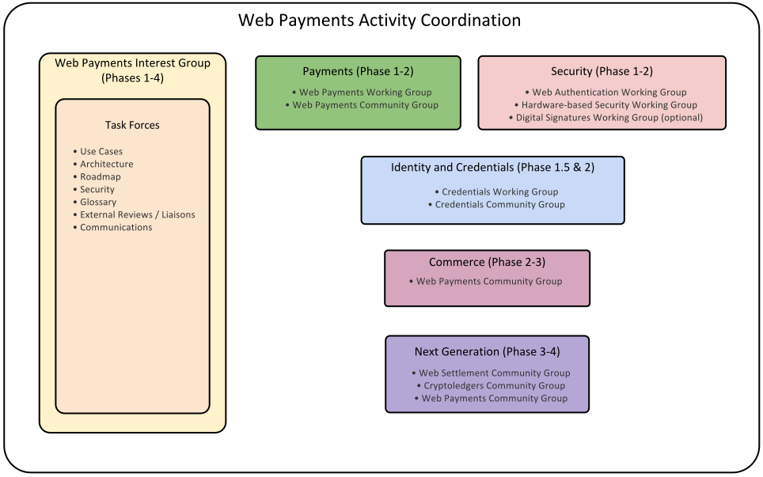

Abstract
The purpose of this document is to outline a coherent implementation and
deployment strategy for the Web Payments standardization work at W3C.
Status of This Document
This section describes the status of this document at the time of its publication.
Other documents may supersede this document. A list of current W3C publications and the
latest revision of this technical report can be found in the W3C technical reports index at
http://www.w3.org/TR/.
This document is a work in progress and is being released early and often
using an agile process; it is incomplete.
This document was published by the Web Payments Interest Group as an Editor's Draft.
If you wish to make comments regarding this document, please send them to
public-webpayments-comments@w3.org
(subscribe,
archives).
All comments are welcome.
Publication as an Editor's Draft does not imply endorsement by the W3C
Membership. This is a draft document and may be updated, replaced or obsoleted by other
documents at any time. It is inappropriate to cite this document as other than work in
progress.
This document was produced by a group operating under the
5 February 2004 W3C Patent
Policy.
W3C maintains a public list of any patent
disclosures
made in connection with the deliverables of the group; that page also includes
instructions for disclosing a patent. An individual who has actual knowledge of a patent
which the individual believes contains
Essential
Claim(s) must disclose the information in accordance with
section
6 of the W3C Patent Policy.
This document is governed by the 1 August 2014 W3C Process Document.
1. Introduction
The purpose of this document is to outline a coherent implementation and
deployment strategy for the Web Payments standardization work at W3C. It
consists of the following major sections:
-
Section 2: Terminology defines common terminology
used throughout the document.
-
Section 3: Coordination describes the different
groups involved in the work and how they will coordinate to achieve the
long-term vision [WEB-PAYMENTS-VISION] of the Web Payments work.
-
Section 4: Web Payments Phase 1 is
separated into subsections detailing: 1) Strategic goals for the phase,
2) Use cases that should be achievable by the end of the phase, 3)
Capabilities that are targeted and which groups are responsible for
delivering the capabilities, 4) A list of relevant groups that will participate
in the phase as well as what they will be working on during the phase, and
4) Deployment goals and strategies to achieve adoption.
1.1 Relationship to Other Documents
This document is one part of a greater body of work around Web Payments that
the Web Payments Interest Group
at W3C is producing. These other documents include:
-
A Vision for Web Payments
describes the desirable properties of a Web Payments architecture.
-
Web Payments Use Cases
1.0 is a prioritized list of all Web Payments scenarios
that the Web Payments Interest Group expects the architecture to address
in time.
-
Web Payments Capabilities 1.0
derives a set of capabilities from the use cases that, if standardized, will
improve payments on the Web.
-
Web Payments Roadmap 1.0
(this document) proposes an implementation and deployment plan that will result
in enhancements to the Open Web Platform that will achieve the scenarios
outlined in the Use Cases document and the capabilities listed in the
Capabilities document.
2. Terminology
This document attempts to communicate the concepts outlined in the Web
Payments space by using specific terms to discuss particular concepts. This
terminology is included below and linked to throughout the document to aid
the reader:
- entity
- A person, organization, or software agent that is capable of
interacting with the world.
- payee
- An entity that receives funds as required by a transaction.
- payer
- An entity that provides a source of funds as required by a
transaction.
- payment instrument
- A mechanism used to transfer value from a payer to a
payee. Examples: Corporate Visa card, personal Visa card, a
bitcoin account, a PayPal account, and an Alipay account. [PSD2] any
personalized device(s) and/or set of procedures agreed between the
payment service user and the payment service provider and used in
order to initiate a payment order. [ECB] a tool or a set of procedures
enabling the transfer of funds from a payer to a payee.
- payment processor
- An entity that submits and processes payments using a
particular payment instrument to a payment network. Examples:
Stripe, PayPal, Authorize.net, Atos, FedACH.
- payment scheme
- Sets of rules and technical standards for the execution of payment
transactions that have to be followed by
adhering entities (payment
processors, payers and payees). Examples: Visa, MasterCard, Bitcoin, Ripple,
PayPal, Google Pay, Alipay, Yandex money, ACH, SEPA. [ECB] a set of
interbank rules, practices and standards necessary for the functioning
of payment services.
- transaction
- An economic exchange between a payer and one or more
payees. An agreement, communication, or movement
carried out between a buyer and a seller to exchange an asset for
payment.
- transfer order
- [ECB] an order or message requesting the transfer of assets (e.g.
funds, securities, other financial instruments or commodities) from
the debtor to the creditor.
- wallet
-
a software service, providing similar functions in the digital world
to those provided by a physical wallet, namely:
- It holds payment instruments registered by the wallet
owner;
- It supports certain payment schemes and enables the payer to
use registered payment instruments to execute a payment in
accordance with that scheme;
- It may hold one or more balances of some digital asset that
can be used to make payments.
This definition of wallet may expand in the future to include
other items people find in physical wallets such as digital
receipts, coupons, and identification.
3. Coordination
In order for the Web Payments Activity to succeed, multiple groups will need
to coordinate work in key areas related to payments, commerce,
identity/credentials, and security. The diagram below outlines the categories
that each group will participate in as well as the phases the groups will
be active in:

4. Web Payments Phase 1
The initial implementation of the Web Payments work will start in October 2015
and will focus on delivering standards for a Minimum Viable Platform (MVP)
by December 2017.
4.1 Goals
The scope of work supports the following elements of a basic purchase
triggered by user interaction with a Web application initiating a new
payment. These standards define a high-level message flow for a payment
from payer to payee either in the form of a credit push (payer
initiated) or a debit pull (payee initiated) payment, and can be used to
facilitate a payment from any payment scheme.

- Pre-Payment
-
- Registration, by the payer with their
wallet, of any conforming payment
instrument they wish to use on the Web (e.g. a credit or
debit card, electronic cash, cryptocurrency, etc).
- Negotiation of Terms
-
- Payment Initiation Request, by the payee to
the payer providing the terms of the payment including elements
such as the accepted payment schemes, price, currency, recurrence,
transaction type (purchase, refund etc.), timeout and requests for
any additional data that is required from the payee.
- Negotiation of Payment Instruments
-
- Discovery, by the payer, of their available
payment instruments that can be used to make the payment. This is
done by matching those registered by the payer with those
supported by the payee (as defined in the Payment Initiation
Request), while keeping information local to the payer.
- Selection of a payment instrument by the
payer, confirmation of the terms, and sending of any requested
data back to the payee for validation.
- Payment Processing and Completion
-
- Execution of the payment by either payer or payee.
- Delivery of a Payment Completion generated by
the entity that executed the payment. This may contain a
Proof of Payment if supported by the payment
scheme.
The group will also address exceptions that may occur during these
steps, including payment authorization failure.
4.2 Use Cases
The following use cases are in scope for phase 1 with specific limitations
expressed beside each use case:
The capabilities associated with each use case listed above can be found in
the
Web Payments Capabilities 1.0 document.
4.3 Groups and Scope
A list of relevant groups that will participate in the first iteration of
specification creation.
| Group |
Scope |
Charter |
|
Web Payments Interest Group
|
Continued development of use cases and requirements for phase 2.
Liason between larger W3C community and other relevant standards bodies.
|
October 2014 - December 2017
|
|
Web Payments Working Group
|
Invoking a payment request, selecting a payment instrument, initiating funds
transfer, delivering a proof of payment.
|
Draft Charter
|
|
Web Authentication Working Group
|
Secure authentication of entities (users, systems and devices) to enable
high-security Web applications. Based on FIDO Alliance work.
|
No charter yet
|
|
Hardware-based Security Working Group
|
A set of Hardware-Based Web Security standard services providing Web
Applications usage of secure services enabled by hardware modules
(Trusted Execution Environments, Secure Elements, and other secure enablers).
|
No charter yet.
|
Issue 1
It is currently unknown whether or not a Credentials WG or Linked Data
Security WG will be created.
-
Technical Architecture Group (TAG) (for reviews related to Web Architecture)
-
Security IG (for reviews about security)
-
Privacy IG (for reviews about sharing of sensitive information)
Related W3C Community Groups
-
Credentials
-
Web NFC
-
Web Payments
-
Web Bluetooth
-
Web Crypto API
-
Web of Things
4.4 Deployment and Adoption
Deployment in phase 1 will focus on enabling a few major online retailers
to run Web Payment agents to issue Web Payment invoices for processing at
1-2 major online Payment Service Providers (or banks). The payment
institutions would then initiate the payment and send a proof of payment
back to the retailer.
4.4.1 Goals
-
3 major online retailers launching Web Payments support (for example:
Alibaba, Walmart, Target, Best Buy, Overstock.com, Amazon, Tesco, eBay, etc.)
-
1-2 large online payment companies (or banks) launching Web Payments support
(for example: Google Wallet, PayPal, Alipay, Bank of America, HSBC,
US Fed, etc.)
-
5-10 smaller players from the online retail space and the payments space
-
1 million payments within the first year after standardization
-
Favorable reviews by the Web developer community
4.4.2 Strategies
-
Deployment strategy should be a pure software deployment. Do not require new hardware to be deployed.
-
Specifications should focus on technology that has already been prototyped.
-
All software should be cloud-only for phase 1. For example, do not try to
support both cloud and local wallets due to a possible conflict around the
"payment message bus" being implemented at the OS layer or the browser layer.
4.5 Unresolved Issues
Issue 2
Where we need an extensible message format, we will want to specify at least
a data model. The hard question will be whether we can achieve a single
serialization (e.g., JSON or JSON-LD or XML) or whether we need multiple.
Issue 3
What canonicalization (if any) is needed in our messages for the purpose of
digital signatures.